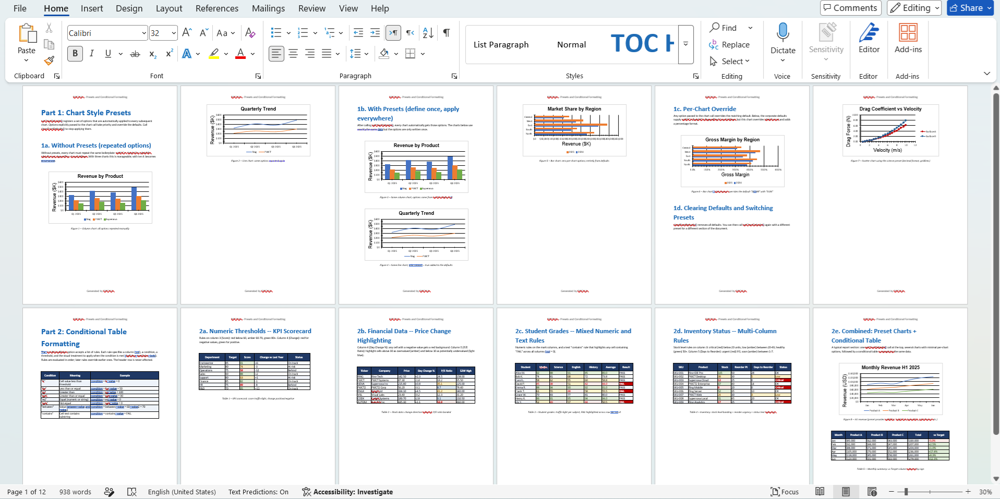
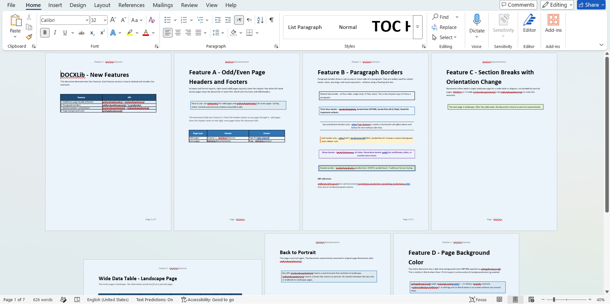
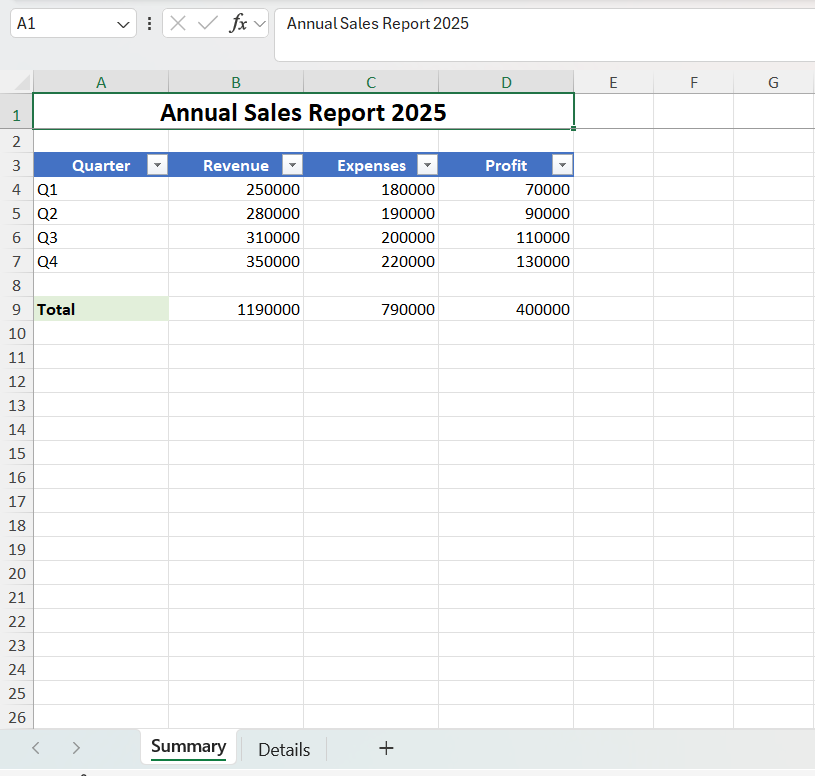
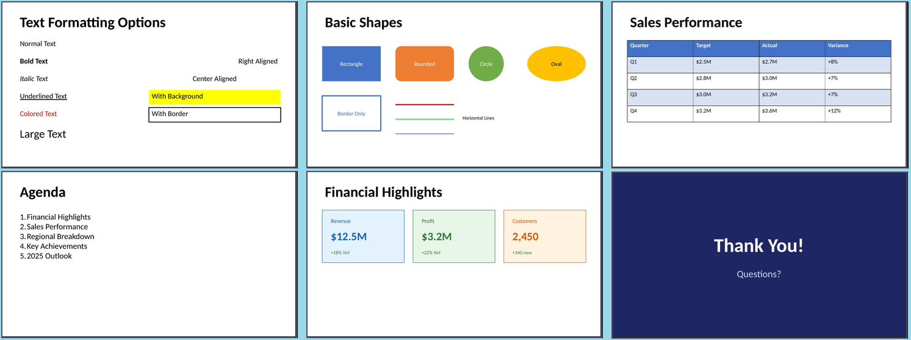
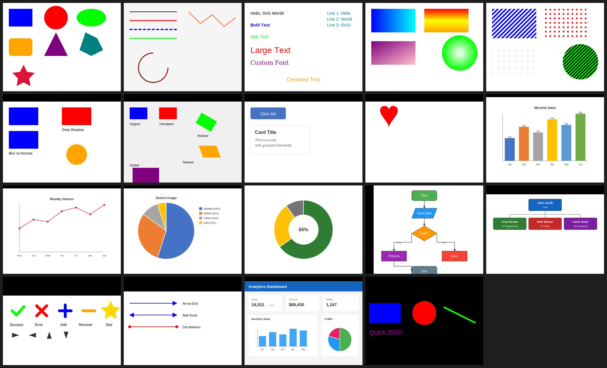
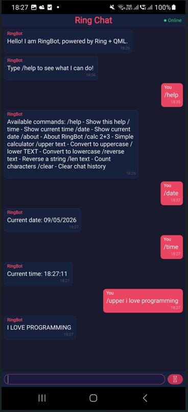
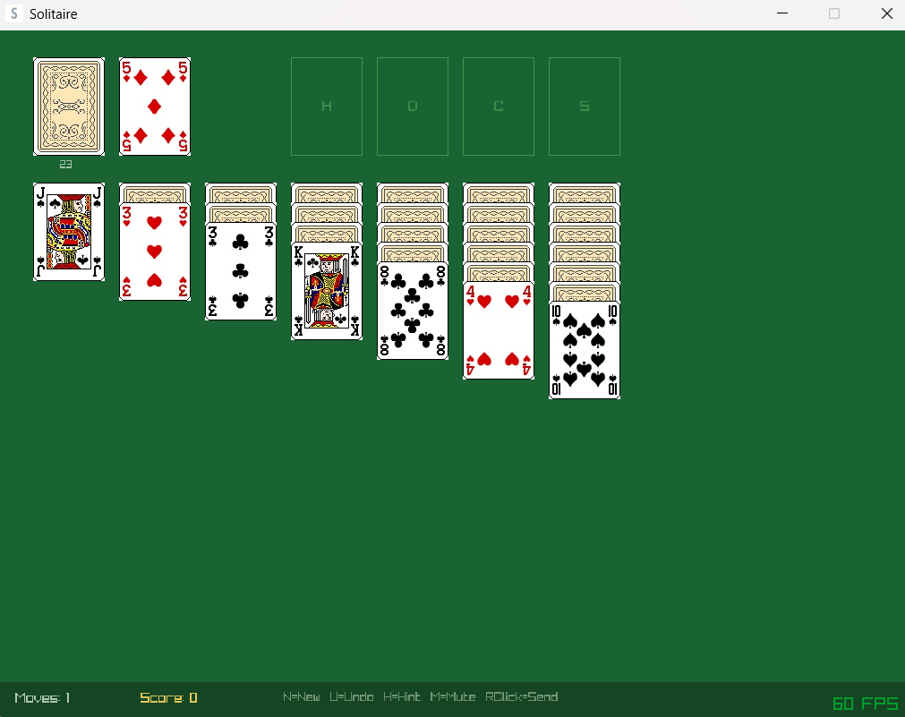
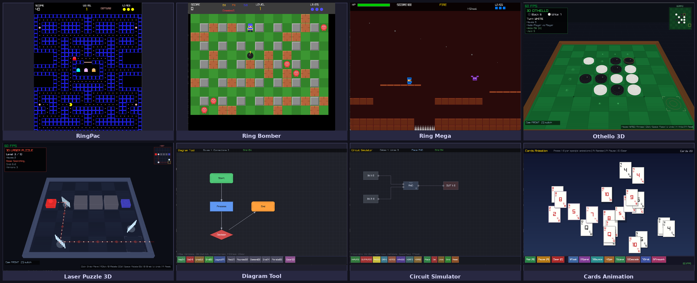
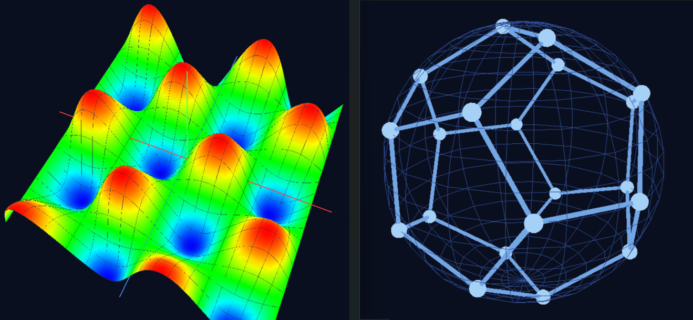
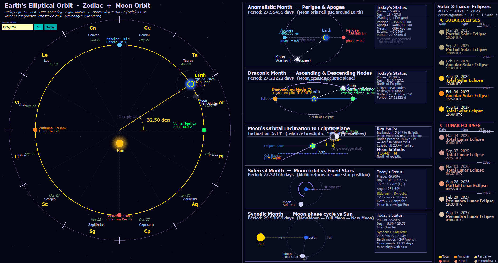

What is new in Ring 1.27
In this chapter we will learn about the changes and new features in Ring 1.27 release.
List of changes and new features
Ring 1.27 comes with the next features!
Research Article
Better Performance
Automatic Hash Table
Faster WebLib
Bolt Web Framework
DOCXLib Package
XLSXLib Package
PPTXLib Package
SVGLib Package
PDFLib Package
DBFLib Package
Ring-Python Package
Ring-CFFI Package
Better Extensions
Solitaire Game
RingRayLib Samples
More Samples
Better Functions
Better Ring API
More Improvements
Research Article
Better Performance
Ring 1.27 introduces performance improvements across many core operations.
Test Program |
Ring 1.26 (s) |
Ring 1.27 (s) |
Speedup |
|---|---|---|---|
Loop |
0.09 |
0.08 |
~1.1x |
Variable read |
0.22 |
0.18 |
~1.2x |
Variable write |
0.35 |
0.24 |
~1.5x |
List item read |
0.39 |
0.29 |
~1.3x |
List item write |
0.43 |
0.36 |
~1.2x |
Calling C functions |
0.30 |
0.23 |
~1.3x |
Calling Ring functions |
0.53 |
0.34 |
~1.6x |
Calling Ring methods using the dot operator |
3.63 |
0.73 |
~5.0x |
Calling Ring methods using braces (outside the loop) |
2.61 |
0.69 |
~3.8x |
Object brace open/close |
3.18 |
1.05 |
~3.0x |
Calling Ring methods using braces (inside the loop) |
6.09 |
1.88 |
~3.2x |
Note
The most significant improvements are in OOP method dispatch. Calling Ring methods via the dot operator is now ~5x faster.
Tip
Tested using Victus Laptop [13th Gen Intel(R) Core(TM) i7-13700H, Windows 11]
Automatic Hash Table
Ring 1.27 introduces automatic hash table acceleration for lists used as hash maps with string keys. When a list is accessed using string keys with the aList[“key”] syntax, Ring now automatically builds an internal hash table once the number of entries reaches a threshold, replacing the previous linear scan with O(1) lookups. This happens transparently with no changes required to existing Ring code. Small lists continue to use the efficient linear scan, while larger lists seamlessly transition to hash table lookups the moment they grow beyond the threshold. The feature is fully compatible with all existing Ring features including add(), del(), and insert() operations on hash-map style lists, and preserves Ring’s case-insensitive key matching behavior so that aList[“Name”] and aList[“name”] correctly refer to the same entry.
Example:
Decimals(3)
t1 = clock()
aList = 1:5 # [1,2,3,4,5]
for t=1 to 100
aList + [ "key"+t , t*t ]
next
? "Size: " + len(aList)
// Test Performance
for t=1 to 1_000_000
aList["key1"]
aList["key10"]
aList["key100"]
next
? aList["key1"]
? aList["key10"]
? aList["key100"]
t2 = clock()
? "Time: " + (t2-t1) + " ms"
Output (Using Ring 1.27):
Size: 105
1
100
10000
Time: 239 ms
Output (Using Ring 1.26):
Size: 105
1
100
10000
Time: 2702 ms
Note
Ring 1.27 completes in 239 ms versus 2702 ms in Ring 1.26 — a ~11x faster.
The improvement comes entirely from eliminating the linear scan on a 105-entry list. In Ring 1.26 each aList[“key”] call walked up to 105 items comparing strings. In Ring 1.27 the hash table is built once on first access and every subsequent lookup is O(1). With 3 million lookups the difference compounds dramatically
Tip
The 5 initial numeric items [1,2,3,4,5] at the start of the list confirm that the hash-map acceleration works correctly on a mixed list, not just a pure hash-map list.
Faster WebLib
Ring 1.27 introduces a major performance improvement to the WebLib library through a new stack-based rendering engine for nested HTML elements. In previous versions, every HTML element created inside a brace block — such as Table, TR, TD, H1, and so on — allocated a separate Ring object in memory. A page with a table of 100 rows and 5 columns would silently create over 500 objects, each carrying hundreds of attributes, output string, and child object list. The overhead of allocating, initializing, and garbage-collecting all these objects was the dominant cost of page generation.
Example:
load "weblib.ring"
import system.web
func main
t1 = clock()
cOutput = createReport()
t2 = clock()
? "Time: " + (t2-t1) + " ms"
write("report.html", cOutput)
system("report.html")
func createReport
nCustCount = 100
oPage = new HtmlPage {
h1 { text("Customers Report") }
Table
{
style = styleWidth("100%")+styleGradient(4)
TR
{
TD { WIDTH = "10%" text("Customers Count : ") }
TD { text(nCustCount) }
}
}
Table
{
style = styleWidth("100%")+styleGradient(26)
TR
{
style = styleWidth("100%")+styleGradient(24)
TD { text("Name ") }
TD { text("Age") }
TD { text("Country") }
TD { text("Job") }
TD { text("Company") }
}
for t=1 to nCustCount
TR
{
TD { text("Test "+t) }
TD { text("30") }
TD { text("Egypt") }
TD { text("Sales") }
TD { text("Future") }
}
next
}
}
return oPage.output()
Output (Using Ring 1.27):
Time: 9 ms
Output (Using Ring 1.26):
Time: 703 ms
Note
Ring 1.27 completes in 9 ms versus 703 ms in Ring 1.26 — a ~78x faster.
Pages with deeper nesting or more rows benefit proportionally. Existing user code requires no changes; the brace-block syntax, attribute assignment, style functions, and all element names work exactly as before.
Tip
If we need better performance we can generate HTML documents using WebLib functions or HTML Templates.
Bolt Web Framework
Bolt brings modern web development to Ring. It pairs an Express.js-like DSL with a Rust-powered HTTP engine, giving you a framework that is both approachable and fast. Write routes in Ring, run them on a Rust async runtime.
Install:
ringpm install bolt
Example:
load "bolt.ring"
new Bolt() {
port = 3000
@get("/", func {
$bolt.send("Hello from Bolt!")
})
@get("/users/:id", func {
$bolt.json([
:id = $bolt.param("id"),
:name = "User " + $bolt.param("id")
])
})
where("id", "[0-9]+")
@post("/users", func {
data = $bolt.jsonBody()
$bolt.jsonWithStatus(201, [:created = true, :data = data])
})
}
Run:
ring app.ring
# [bolt] Server running on http://0.0.0.0:3000
DOCXLib Package
DOCXLib is a pure-Ring library for generating and reading Word (.docx) documents.
Install:
ringpm install docxlib
Features:
Zero dependencies — Pure Ring
Fluent API — Every method returns self, enabling method chaining
Rich tables — Cell merging, per-side borders, row heights, text direction, images, lists inside cells
Full typography — Bold/italic/colour/font/size per run, language tags, character styles, custom paragraph styles
Paragraph control — Widow/orphan control, hyphenation suppression, keep-together, contextual spacing
Navigation — TOC, Table of Figures, Table of Tables, bookmarks, cross-refs
Forms — Checkboxes, dropdowns, and text input content controls
Shapes — Rectangle, ellipse, diamond, triangle, line (DrawingML)
Themes — 8 built-in colour palettes applied to all heading levels
Charts — 8 native OOXML chart types with axis formatting, data tables, and style presets
Mail Merge — Template engine: setMergeTemplate(), mergeRecord(), mergeAll() with {{FIELD}} tokens
Image cropping — Non-destructive a:srcRect crop by percentage on inline and floating images
Rich notes — Footnote and endnote bodies with full per-run formatting (bold, italic, colour, size)
WordReader — Parse .docx files — extract content and styles; full round-trip reconstruct and save
Example:
load "docxlib.ring"
? "Generate File: hello.docx"
new WordWriter() {
setTitle("My First Document")
setAuthor("Your Name")
setPageSize("a4")
addHeading("Hello, DOCXLib!", 1)
addParagraph("This document was created entirely from Ring code.",
[:color = "0000FF"])
addBulletList(["Feature A", "Feature B", "Feature C"])
save("hello.docx")
}
Screen Shots:


XLSXLib Package
XLSXLib is a pure-Ring library for creating Excel (.xlsx) files.
Install:
ringpm install xlsxlib
Features:
Multiple Worksheets - Create workbooks with many sheets
Cell Operations - Set text, numbers, dates, and formulas
Styling - Fonts, colors, backgrounds, borders, alignment
Number Formats - Currency, percentage, date, time, custom formats
Column/Row Formatting - Custom widths and heights
Merged Cells - Combine cells horizontally and vertically
Auto Filter - Add filter dropdowns to data ranges
Freeze Panes - Keep headers visible while scrolling
Images - Embed PNG, JPG, BMP, and GIF images
Formulas - Full Excel formula support
Example:
load "xlsxlib.ring"
cFileName = substr(filename(),".ring",".xlsx")
? "Generate File: " + cFileName
new ExcelWriter() {
setTitle("Sales Report 2025") setAuthor("Sales Department") setCompany("ABC Corporation")
addSheet("Summary")
titleStyle = createStyle([:bold = true, :fontSize = 16, :align = "center"])
headerStyle = createHeaderStyle()
currencyStyle = createStyle([:align = "right"])
totalStyle = createStyle([:bold = true, :bgColor = "E2EFDA"])
setCellWithStyle(1, 1, "Annual Sales Report 2025", titleStyle)
mergeCells(1, 1, 1, 4)
setCellWithStyle(3, 1, "Quarter", headerStyle) setCellWithStyle(3, 2, "Revenue", headerStyle)
setCellWithStyle(3, 3, "Expenses", headerStyle) setCellWithStyle(3, 4, "Profit", headerStyle)
setCell(4, 1, "Q1") setCell(5, 1, "Q2") setCell(6, 1, "Q3") setCell(7, 1, "Q4")
setCellWithStyle(4, 2, 250000, currencyStyle) setCellWithStyle(4, 3, 180000, currencyStyle)
setCellWithStyle(5, 2, 280000, currencyStyle) setCellWithStyle(5, 3, 190000, currencyStyle)
setCellWithStyle(6, 2, 310000, currencyStyle) setCellWithStyle(6, 3, 200000, currencyStyle)
setCellWithStyle(7, 2, 350000, currencyStyle) setCellWithStyle(7, 3, 220000, currencyStyle)
setFormula(4, 4, "B4-C4") setFormula(5, 4, "B5-C5")
setFormula(6, 4, "B6-C6") setFormula(7, 4, "B7-C7")
setCellWithStyle(9, 1, "Total", totalStyle)
setFormula(9, 2, "SUM(B4:B7)") setFormula(9, 3, "SUM(C4:C7)") setFormula(9, 4, "SUM(D4:D7)")
setColumnWidth(1, 15) setColumnWidth(2, 15) setColumnWidth(3, 15) setColumnWidth(4, 15)
setAutoFilter(3, 1, 7, 4)
freezeTopRow()
save(cFileName)
}
Screen Shot:

PPTXLib Package
PPTXLib is a pure-Ring library for creating PowerPoint (.pptx) files.
Install:
ringpm install pptxlib
Features:
Multiple Slides - Create presentations with many slides
Text Boxes - Formatted text with fonts, colors, alignment
Rich Text - Multiple formats within a single text box
Shapes - Rectangles, circles, ovals, rounded rectangles, lines
Images - PNG, JPG, BMP, GIF support
Tables - With headers, styling, and zebra striping
Lists - Bullet and numbered lists
Backgrounds - Solid colors per slide
Layouts - 16:9, 16:10, 4:3 aspect ratios
Quick Layouts - Title slides, two-column layouts
Speaker Notes - Add notes to slides
Example:
load "pptxlib.ring"
cFileName = substr(filename(),".ring",".pptx")
? "Generate File: " + cFileName
new PPTWriter() {
addTitleSlide("My Presentation", "Subtitle here")
addSlide()
addTitle("First Slide")
addTextBox("Hello, World!", 0.5, 1.5, 9, 2, NULL)
save(cFileName)
}
Screen Shots:

SVGLib Package
A pure Ring library for creating Scalable Vector Graphics (SVG) files using the Ring programming language. It generates standard SVG files that can be viewed in any web browser, embedded in HTML, or used in other applications.
Install:
ringpm install svglib
Features:
Basic Shapes — Rectangles, circles, ellipses, polygons, stars
Lines & Paths — Lines, polylines, arcs, custom paths with curves
Text — Formatted text, multiline, centered, text on path
Gradients — Linear and radial gradients with multiple stops
Patterns — Stripes, dots, grids, custom patterns
Filters — Blur, drop shadow, glow effects
Transformations — Translate, rotate, scale, skew (per element)
Groups — Group elements together
Clipping — Clip shapes with masks
Markers — Arrows and dots on lines
Charts — Bar, line, pie, donut charts
Diagrams — Flowcharts, org charts
Icons — Checkmarks, crosses, arrows, stars
Example:
load "svglib.ring"
svg = new SVGWriter(600, 400) {
setBackground("#F5F5F5")
addRect(0, 0, 600, 50, [:fill = "#1565C0"])
addText("Analytics Dashboard", 20, 32,
[:fontSize = 20, :fontWeight = "bold", :fill = "white"])
shadow = createShadowFilter(2, 2, 3, "#CCC")
addRoundedRect(20, 70, 170, 80, 6, [:fill = "white", :filter = shadow])
addText("Users", 35, 95, [:fontSize = 12, :fill = "#1565C0"])
addText("24,521", 35, 125, [:fontSize = 22, :fontWeight = "bold", :fill = "#333"])
addText("+12%", 120, 125, [:fontSize = 12, :fill = "#4CAF50"])
addRoundedRect(210, 70, 170, 80, 6, [:fill = "white", :filter = shadow])
addText("Revenue", 225, 95, [:fontSize = 12, :fill = "#E65100"])
addText("$89,430", 225, 125, [:fontSize = 22, :fontWeight = "bold", :fill = "#333"])
addRoundedRect(400, 70, 180, 80, 6, [:fill = "white", :filter = shadow])
addText("Orders", 415, 95, [:fontSize = 12, :fill = "#7B1FA2"])
addText("1,247", 415, 125, [:fontSize = 22, :fontWeight = "bold", :fill = "#333"])
addRoundedRect(20, 170, 350, 210, 6, [:fill = "white", :filter = shadow])
addText("Monthly Sales", 35, 195, [:fontSize = 14, :fontWeight = "bold", :fill = "#333"])
chartData = [:labels = ["Jan", "Feb", "Mar", "Apr", "May"], :values = [42, 58, 49, 72, 65]]
addBarChart(chartData, 25, 200, 340, 170, [:colors = ["#42A5F5"]])
addRoundedRect(390, 170, 190, 210, 6, [:fill = "white", :filter = shadow])
addText("Traffic", 405, 195, [:fontSize = 14, :fontWeight = "bold", :fill = "#333"])
pieData = [:labels = ["Organic", "Direct", "Social"], :values = [50, 30, 20]]
addPieChart(pieData, 485, 295, 60, [:colors = ["#4CAF50", "#2196F3", "#E91E63"]])
save("demo18_dashboard.svg")
}
Screen Shots:

PDFLib Package
PDFLib is a pure Ring implementation for generating PDF 1.4 files with no external dependencies. Output is compatible with most PDF viewers including Adobe Acrobat, Foxit Reader, and web browsers.
Install:
ringpm install pdflib
Features:
Page management — multiple pages, sizes (A4, Letter, Legal, etc.), portrait/landscape orientation, margins
Text — 14 PDF standard fonts (no font files needed; supplied by every PDF viewer), sizes, colors, left/center/right alignment
Paragraphs — word-wrapping with configurable line height and alignment
Arabic / Unicode text — any TTF can be loaded and embedded; full shaping and RTL pipeline for Arabic; direct glyph mapping for Latin extensions, Greek, Cyrillic, and CJK; complex scripts (Devanagari, Thai, etc.) are not supported
Shapes — rectangles, circles, ellipses, lines, polygons; stroke, fill, or both
Tables — headers, alternating row colors, borders, explicit or auto column widths, Arabic-aware cell rendering
Lists — bullet lists and numbered lists
Charts — bar charts and pie charts with legends
Images — JPEG (DCTDecode), PNG (FlateDecode, all color types), BMP (24-bit); pure Ring parsers, no C library required
Page numbers — configurable format and position
Headers / Footers — per-document text with alignment
Watermarks — rotated text at arbitrary angle
Graphics state — save/restore, line width, cap, join, dash patterns
Document properties — title, author, subject, keywords, creator
Example:
load "pdflib.ring"
items = [
["Description", "Qty", "Price", "Total"],
["Web Design", "1", "$2,500", "$2,500"],
["Hosting (Annual)", "1", "$300", "$300"],
["Domain Name", "2", "$15", "$30"]
]
new PDFWriter() {
setTitle("Invoice #1001")
setFont(PDF_HELVETICA_BOLD, 28)
setTextColor("navy")
drawText("INVOICE", 72, 760)
setFont(PDF_HELVETICA, 12)
setTextColor("gray")
drawTextRight("#INV-1001", 540, 760)
drawTextRight("Date: 2025-01-15", 540, 740)
drawTable(items, 72, 650, [250, 60, 80, 78], [
:headerBg = "navy",
:headerFg = "white"
])
setFont(PDF_HELVETICA_BOLD, 14)
setTextColor("black")
drawTextRight("Total: $2,830.00", 540, 540)
save("invoice.pdf")
}
DBFLib Package
A pure Ring library for reading, writing, and maintaining Visual FoxPro .dbf database files and their companion .fpt memo files.
Install:
ringpm install dbflib
Example:
load "dbflib.ring"
aFields = [
["ID", "N", 6, 0],
["NAME", "C", 40, 0],
["SALARY", "N", 12, 2],
["ACTIVE", "L", 1, 0],
["NOTES", "M", 10, 0]
]
new DBFFile {
create("employees.dbf", aFields)
append()
replace("ID", 1)
replace("NAME", "Ahmed Al-Rashid")
replace("SALARY", 85000.50)
replace("ACTIVE", true)
replace("NOTES", "Senior developer, joined 2023.")
close()
}
new DBFFile {
open("employees.dbf")
goTop()
while ! isEof()
? trim(fieldGet("NAME")) + " - " + fieldGet("SALARY")
? fieldGet("NOTES")
skip(1)
end
close()
}
Ring-Python Package
A library that brings the entire Python ecosystem to the Ring programming language.
Install:
ringpm install ring-python
Powered by PyO3, this library allows you to seamlessly call Python functions, import Python modules (like NumPy, Pandas, or Matplotlib), and exchange data between Ring and Python directly from your Ring applications.
Key Features:
Full Python Embedding — Initialize the Python interpreter and execute arbitrary Python code from Ring.
Two-Way Data Exchange — Pass strings, numbers, lists, and dicts between Ring and Python seamlessly.
Module Import — Import any installed Python package and call its functions directly.
Object-Oriented API — Clean Ring wrapper classes (Python, PyObject, PyModule, etc.) alongside low-level functions for maximum control.
Method Calls — Call Python functions and methods with positional args, keyword args (kwargs), or both.
Cross-Platform — Build for Windows, macOS, Linux, and FreeBSD from one codebase.
Example:
load "python.ring"
py = new Python()
py.exec("import numpy as np")
# Create array and compute statistics
py.exec("
data = np.array([1, 2, 3, 4, 5])
_mean = str(np.mean(data))
_std = str(np.std(data))
_dot = str(np.dot(data, data))
")
? "Mean: " + py.getVar("_mean")
? "Std: " + py.getVar("_std")
? "Dot: " + py.getVar("_dot")
Output:
Mean: 3.0
Std: 1.4142135623730951
Dot: 55
Ring-CFFI Package
A Foreign Function Interface library for the Ring programming language!
Install:
ringpm install ring-cffi
Built on libffi, Ring CFFI allows you to call C functions, manipulate C memory, work with structs/unions/enums, and pass Ring functions as C callbacks — all directly from Ring, without writing any C extension code.
Key Features:
Dynamic Library Loading: Load shared libraries (.so, .dll, .dylib) at runtime
C Function Calls: Call C functions directly from Ring with automatic type conversion
Pointer Operations: Pointer arithmetic, dereferencing, read/write access
Struct Support: Define and manipulate C structs with named field access
Union & Enum Support: Define and use C unions and enumerations
Callbacks: Pass Ring functions as C callbacks
Memory Management: Allocate and manage C memory directly
C String Handling: Seamless conversion between Ring and C strings
Cross-Platform: Works on Windows, Linux, macOS, and FreeBSD
High-Level OOP API: Clean FFI class with intuitive method names
Example:
load "cffi.ring"
# msvcrt.dll (Windows), libSystem.B.dylib (macOS)
new FFI("libm.so.6") {
# Call a simple function (sqrt)
oSqrt = cFunc("sqrt", "double", ["double"])
result = invoke(oSqrt, [25.0])
? "sqrt(25) = " + result
# Call printf (variadic function)
oPrintf = varFunc("printf", "int", ["string"])
varcall(oPrintf, ["Hello, %s! Number: %d\n", "World", 123])
}
Output:
sqrt(25) = 5
Hello, World! Number: 123
Better Extensions
RingFastPro Extension - Better Performance
RingFastPro Extension - Added Transform3D() function
RingQt Extension - Added: QStorageInfo class
RingQt Extension - Added: QSvgWidget class
RingQt Extension - Added: QSvgRenderer class
RingQt Extension - Added: QSvgGenerator class
RingQt Extension - Added: QQmlContext class
RingQt Extension - Added: QQmlProperty class
RingQt Extension - Added: QQmlExpression class
RingQt Extension - Added: QQmlComponent class
RingQt Extension - Added: QQmlApplicationEngine class
RingQt Extension - Many classes have been converted into managed classes
RingLibSDL Extension - Revised SDL_QueryTexture()
RingLibSDL Extension - Revised SDL_RenderGetScale()
RingLibSDL Extension - Revised SDL_GL_BindTexture()
RingLibSDL Extension - Removed SDL_GetRevisionNumber()
RingStbImage - stbi_load functions - Better Implementation
RingSQLite - Added Parameterized Query Support
RingFreeGLUT - Check event string size before usage
The next samples are added to demonstrates some of the new features
samples/UsingQt/SVG/test1.ring
samples/UsingQt/SVG/test2.ring
samples/UsingQML/WebAsm_ChatInterface/main.ring
samples/UsingQML/RingQML_Communication/test1.ring
samples/UsingQML/RingQML_Communication/test2.ring
samples/UsingQML/RingQML_Communication/test3.ring
samples/UsingQML/RingQML_Communication/AnalogClock.ring
samples/UsingQML/RingQML_Communication/Calculator.ring
samples/UsingQML/RingQML_Communication/ColorPicker.ring
samples/UsingQML/RingQML_Communication/FormBuilder.ring
samples/UsingQML/RingQML_Communication/TodoList.ring
samples/UsingQML/RingQML_Communication/QuizGame.ring
samples/UsingFastPro/MugRotation/Mug-Rotation-FastPro-Transform.ring
The next screen shot for the Chat Interface sample developed using Ring and QML

Solitaire Game
The Solitaire Game (Developed using Ring and RayLib)
Install and run:
ringpm install solitaire
ringpm run solitaire

RingRayLib Samples
We added 70 new applications and games to the ring/samples/UsingAI/UsingClaude folder
Over 62,000 lines of code automatically generated using Claude Code for the RingRayLib samples

This collection serves three purposes at once. First, it was born as a stress test of using Claude Code to develop RingRayLib games — each app and game was built during hands-on experimentation to explore what the tool is genuinely capable of, from simple clocks to shooters. Second, the samples double as a living test suite for the Ring language and RingRayLib themselves — using Claude Code to generate diverse programs is an effective way to surface edge cases, validate library coverage, and push the runtime across many different usage patterns. Third, and perhaps most powerfully, the collection acts as a reusable dataset for future development: because Claude Code can read and reason about existing code, you can point it at any sample here and instruct it to port a specific feature into your own project. This mix-and-match workflow is exactly how Ring games such as DaveTheFighter, Tank3D, LineDrawing3D, and CodeRooms3D were built — 100% with Claude Code, guided by prompts that referenced and combined ideas from samples like these.
Ring Pac-Man 2D |
Ring Pac-Man 3D |
Ring Asteroids |
Ring Flappy Bird |
Ring Space Invaders |
Ring Donkey Kong |
Ring Mario |
Ring Mega Man |
Tanks 2-Player Battle |
Ring Battlezone |
Chess 2D |
Chess 3D |
Checkers 3D |
Go 3D |
Othello 3D |
Connect Four 3D |
Hex Game 3D |
Cards Game 2D |
Cards Game 3D |
Sokoban 2D |
Sokoban 3D |
Ice Sliding Puzzle 3D |
Laser Puzzle 3D |
Pipe Connect 3D |
Sliding Puzzle 3D |
Maze 3D |
Tower of Hanoi 3D |
Ring Minesweeper 3D |
Knight’s Tour 3D |
N-Queens Puzzle 3D |
Lights Out 3D |
Match-3 Gem Game 3D |
Rescue |
2048 |
Ring Doom |
Dungeon Crawler |
The Sword Game |
Helicopter Gunship |
Endless Runner |
Platformer 2D |
Ring Baba |
Roguelike |
Ring Bomber |
Breakout |
Pinball |
Racing |
Space Shooter |
Tower Defense 2D |
Tower Defense 3D |
Snake 3D |
Ring Tetris 3D |
Analog Clock |
Paint Program |
Diagram Tool |
Logic Circuit Simulator |
Sorting Algorithm Visualizer |
Solar System |
Ecosystem Simulator |
Traffic Simulator |
Weather Simulator |
Game of Life 2D |
Game of Life 3D |
Particle System |
Color Animation Screensaver |
Forest Explorer |
Cards Animation 2D |
Cards Animation 3D |
Ring Witness |
Voxel 3D |
Pegblaster |
More Samples
The samples/UsingGemini folder is moved to samples/UsingAI/UsingGemini folder
The samples/UsingBingChat folder is moved to samples/UsingAI/UsingBingChat folder
The next games are moved from ring/applications to samples/UsingAI/UsingClaude/games folder
Tank3D
DaveTheFighter
LineDrawing3D
CodeRooms3D
Many samples in samples/UsingQML folder are moved to samples/UsingQML/QML_SomeFeatures
The next samples are revised
samples/UsingLibCurl/test12.ring
samples/UsingLibCurl/test13.ring
samples/UsingQt/TableWidget/QTableWidget.ring
samples/UsingQt/PrintPreview/reportusingweblib.ring
The next samples are added to the samples foder:
samples/Language/ClassMethods/nestedanonymous.ring
samples/Language/EnumConstant/EnumConstantTest.ring
samples/General/RosettaCode/YinYang.ring
samples/General/RosettaCode/YinYang2.ring
samples/General/FindAnadromes/process.ring
samples/General/FindAnadromes/process2.ring
samples/General/FindAnadromes/process3.ring
samples/General/Performance/ringper.ring
samples/General/Performance/nqueensbitmask.ring
samples/General/Orbital/Earth_Orbit_Zodiac.ring
samples/General/Orbital/Earth_Orbit_Moon_Phases_Eclipses_Zodiac.ring
samples/UsingArabic/WriteArabicDate/DateServices.ring
samples/UsingWebLib/GenReport/genreport.ring
samples/UsingFreeGLUT/Hex_Sphere.ring
samples/UsingFreeGLUT/Penta_Sphere.ring
samples/UsingFreeGLUT/Octagon_Sphere.ring
samples/UsingFreeGLUT/SinCos_Surface.ring
samples/UsingRogueUtil/matrix_rain.ring
samples/UsingRayLib/more/ex11_matrix_rain.ring


Better Functions
Validate arguments and reject NaN or Inf values when they are not allowed
Produce an error when arguments are passed to functions that do not accept parameters
Revise each function to ensure it terminates execution after displaying an error.
DiffDays()/AddDays() - Better Implementation
Sort() function - Better Performance
BinarySearch() - Better Performance and Allows mixing types in the list
Remove() - Correct error message when the argument count is incorrect
SysSleep() - Check nanosleep() output
Ring_State_Main()/Ring_State_MainFile() - Check the length of the file name before usage
Ring_State_MainFile() - Thread safe implementation
Ring_State_Delete() - Use: RING_API_SETNULLPOINTER
Ring_State_FileTokens()/Ring_State_StringTokens() - Reset: lScannerCommandsAsTokens flag
Ring_State_FindVar() - Return zero if the variable is not found
Ring_State_RunObjectFile() - Return True/False
Unsigned() - Better Implementation - Remove unnecessary checks
Unsigned() - Accept the operator before/after the numbers
Unsigned() - Check variable size before the shift operation
IsMethod()/IsPrivateMethod() - Produce error when the argument type is incorrect
Randomize() - Produce error when the value range is not correct
Randomize() - Respect C strict-aliasing rules
Hex2Str() - Always move the first nibble into the high position
Str2HexCStyle() - Check the string length before processing
Str2HexCStyle() - Pads single-digit bytes with space instead of zero
FGetPos() - Free allocated memory when the function fail
FPutC()/UnGetC() - Check string size (Not less than 1 character)
SubStr() - Check argument count
MemCpy() - Check negative size
MergeMethods() - Avoid Self-merge
GetNumber() - Check fgets() output
Date()/Time()/TimeList() - Check timer overflow
Date()/Time()/TimeList() - Thread safe usage for localtime()
Number() - Accept one e/E in the number
Dir() - Check the path length before using strcat()
Dir() - Check chdir() output
Input() - Check fread() output
GetChar() - Return an empty string when we the getchar() output is EOF
LoadLib() - Close the DLL when the ringlib_init() function is missing
System() - Return the function output
Assert() - Follow Ring’s rules for evaluating values as True or False
Sqrt()/Log()/Log10()/ASin()/ACos()/Pow() - Check values before usage
Lines() - Return zero if the input is an empty string
Lines() - Don’t increment the line count for a new line at the last index
List2Str() - Don’t add extra line at start when processing sub list
Better Ring API
The next features are added to Ring API (Useful when writing C extensions for Ring)
RING_API_GETUNSIGNEDINTPOINTER(nParameter)
RING_API_ACCEPTUNSIGNEDINTVALUE(nParameter)
RING_API_GETSHORTINTPOINTER(nParameter)
RING_API_ACCEPTSHORTINTVALUE(nParameter)
RING_API_GETUNSIGNEDSHORTINTPOINTER(nParameter)
RING_API_ACCEPTUNSIGNEDSHORTINTVALUE(nParameter)
RING_API_GETLONGINTPOINTER(nParameter)
RING_API_ACCEPTLONGINTVALUE(nParameter)
RING_API_GETUNSIGNEDLONGINTPOINTER(nParameter)
RING_API_ACCEPTUNSIGNEDLONGINTVALUE(nParameter)
Also, the Code Generator for Extensions is revised to support the added features
The aPassPointers list is used to control passing pointers to functions
The aNumberTypes list is revised to detect many numeric types automatically
More Improvements
Better Documentation - Chapter: FAQ
Better Documentation - Chapter: Lists
Better Documentation - Chapter: Program Structure
language/build/locatevc.bat - Added: VS 2026 Community Edition support
language/build/buildgccstatic.bat - Build ringw.exe too
language/build/builddos.bat - Set stack size to 64K
Ring for Linux - Modernize build scripts using pkg-config
Ring for Android - Avoid setting RING_SIMPLEHASHFUNC
Ring Compiler - Detect unclosed comment error
Ring Compiler - Check filename size before loading
Ring Compiler - Maximum size for keyword/operator (120 characters)
Ring VM - ring_general_justfilename() - Better Code
Ring VM - ring_list_sortnum_gc() - Better Performance
Ring VM - ring_list_sortstr_gc() - Better Performance
Ring VM - ring_list_updaterefcount_gc() - Better Code
Ring VM - ring_vm_statecustmutexunlock() - Better Code
Ring VM - ring_vm_oop_callmethodfrombrace() - Better Code
Ring VM - ring_vm_oop_preparecallmethodfrombrace() - Better Code
Ring VM - ring_vm_oop_movetobeforeobjstate() - Better Performance
Ring VM - ring_vm_loadfunc2() - Better Code - Logical order of instructions
Ring VM - ring_objfile_processfile() - Check fseek()/ftell() output
Ring VM - ring_vm_file_read() - Check fseek() output
Ring VM - ring_vm_mod() - Check values before processing
Ring VM - ring_hashtable_rebuild_gc() - Check overflow
Ring VM - ring_hashlib_murmurthree32() - Avoid unaligned memory read
Ring VM - ring_string_add2_gc() - Check string capacity overflow
Ring VM - ring_vm_error2() - Better memory management (Avoid new string allocation)
Ring VM - ring_vm_oop_parentmethods() - Better Code
Ring VM - For Loop - Produce error if nStart/nEnd/nStep are not finite numbers
Ring VM - Save/Restore state when using Braces - Better Performance
Ring VM - pObjState information - Use array of structure instead of Ring Lists
Ring VM - New Instruction for calling methods using the dot operator - ICO_LOADMETHODP
Ring VM - New Instruction for calling methods using braces - ICO_LOADBRACEMETHODP
Ring VM - Cache the This variable list in the VM structure - Better Performance
Ring VM - Cache the GetTempVar/SetTempVar variable list - Better Performance
Ring VM - Cache the ErrorMsg variable list - Better Performance
Ring VM - Using preprocessor to access the members of the Object list
Ring VM - Using preprocessor to access the members of the Variable list
Ring VM - Check NULL in C extensions (RING_API_CHECKNULLPOINTER(ptr))
Ring VM - Support using Computed Goto (optional feature when building Ring VM)
Ring VM - Added Zero-Divisor Check to /= and %= operators
Ring VM - Check values before the shift operations
Ring VM - Object File - Check ring_general_fopen() output before usage
Ring VM - Object File - Check buffer overflow with user-controlled filename
Ring VM - Object File - Use size_t in functions used for processing the file